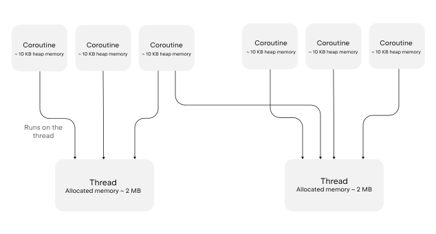

程序要一边等待数据，一边响应别的任务，这叫并发。Kotlin 用协程承载一段可以暂停、稍后继续的计算。多个协程可以交替推进；如果有多条执行线程，它们也可能并行运行。
在 JVM 和 Kotlin/Native 上，协程实际在线程上运行。一个协程等数据时可以挂起，把线程让给另一个协程。图中要区分两件事：任务是否在同一段时间内推进，以及它们是否在同一时刻占用不同的核心。

线程与协程的资源差异，在本章末尾用一组 JVM 实验对照。 Comparing coroutines and JVM threads
挂起函数
挂起函数让一段计算能够暂停，等条件满足再从原处继续。调用方仍然可以按照「先做什么、再做什么」书写程序。
声明这种函数，在 fun 前加 suspend。
suspend fun greet() {
println("Hello world from a suspending function")
}挂起调用需要位于挂起函数或协程的挂起代码块中。独立 Kotlin 程序也可以使用 suspend main() 作为入口。
suspend fun main() {
showUserInfo()
}
suspend fun showUserInfo() {
println("Loading user...")
greet()
println("User: John Smith")
}
suspend fun greet() {
println("Hello world from a suspending function")
}眼下 greet() 仍然按顺序调用。suspend 让函数可以调用挂起操作；代码是否产生并发，还取决于是否启动了其他任务。
suspend 属于 Kotlin 语言，大部分协程工具则由 kotlinx.coroutines 库提供。
把协程库加到项目中
按构建工具选用下面一份配置，为项目引入 kotlinx-coroutines-core。
Kotlin
// build.gradle.kts
repositories {
mavenCentral()
}
dependencies {
implementation("org.jetbrains.kotlinx:kotlinx-coroutines-core:1.11.0")
}Groovy
// build.gradle
repositories {
mavenCentral()
}
dependencies {
implementation 'org.jetbrains.kotlinx:kotlinx-coroutines-core:1.11.0'
}Maven
<!-- pom.xml -->
<project>
<dependencies>
<dependency>
<groupId>org.jetbrains.kotlinx</groupId>
<artifactId>kotlinx-coroutines-core</artifactId>
<version>1.11.0</version>
</dependency>
</dependencies>
...
</project>启动第一组协程
读接下来的程序时，依次辨认四样东西。
要运行的挂起代码。 suspending function
管理任务的作用域，例如
withContext()块内的作用域。 coroutine scope启动任务的构建器，例如
CoroutineScope.launch()。 coroutine builder决定使用哪些线程的调度器。 dispatcher
现在来组合这些部件，让多个协程在共享线程池上运行。
-
导入
kotlinx.coroutines。import kotlinx.coroutines.* -
给允许暂停和恢复的函数加上
suspend。suspend fun greet() { println("The greet() on the thread: ${Thread.currentThread().name}") } suspend fun main() {} -
用 delay() 模拟一次需要等待的数据读取，例如网络响应或数据库操作。
suspend fun greet() { println("The greet() on the thread: ${Thread.currentThread().name}") delay(1000L) } -
用 withContext(Dispatchers.Default) 进入共享线程池的上下文。
suspend fun main() { withContext(Dispatchers.Default) { // Add the coroutine builders here } } -
在作用域里用 CoroutineScope.launch() 启动子协程。 coroutine builder function
suspend fun main() { withContext(Dispatchers.Default) { // this: CoroutineScope // Starts a coroutine inside the scope with CoroutineScope.launch() this.launch { greet() } println("The withContext() on the thread: ${Thread.currentThread().name}") } } -
把它们拼起来，同时启动两个子任务。运行前先预测哪一行必定出现，哪几行的先后可能变化。
// Imports the coroutines library import kotlinx.coroutines.* // Imports the kotlin.time.Duration to express duration in seconds import kotlin.time.Duration.Companion.seconds // Defines a suspending function suspend fun greet() { println("The greet() on the thread: ${Thread.currentThread().name}") // Suspends for 1 second and releases the thread delay(1.seconds) // The delay() function simulates a suspending API call here // You can add suspending API calls here like a network request } suspend fun main() { // Runs the code inside this block on a shared thread pool withContext(Dispatchers.Default) { // this: CoroutineScope this.launch() { greet() } // Starts another coroutine this.launch() { println("The CoroutineScope.launch() on the thread: ${Thread.currentThread().name}") delay(1.seconds) // The delay function simulates a suspending API call here // You can add suspending API calls here like a network request } println("The withContext() on the thread: ${Thread.currentThread().name}") } }
多运行几次，行的顺序和线程名都可能变化，这取决于当时的调度。
作用域与结构化并发
当一个操作需要多个协程配合，它们也需要共同的完成和取消规则。Kotlin 用结构化并发来表达这种归属。
把任务想成一棵树。父子任务各有从创建到完成、失败或取消的生命周期，彼此通过树上的连接相互约束。
父任务要等孩子都结束才算完成。父任务被取消或因异常失败时，取消会向下传到子孙任务。沿这棵树就能判断哪些工作应当停止。
CoroutineScope 定义工作的归属，内部带有包括调度器在内的上下文。在当前作用域里启动的协程，默认成为对应任务的子任务。
进入 launch 的代码块后，接收者变成新的嵌套作用域。在里面再 launch，启动的就是下一层子任务。 coroutine builder function · receiver
用 coroutineScope() 管理一组子任务
coroutineScope() 沿用调用方的上下文，为代码块建立一棵局部子树。块里直接启动的是它的子任务，子任务再启动的也是它的后代。块本身和所有后代都完成后，函数才会返回。
看下面的例子。
// Imports the kotlin.time.Duration to express duration in seconds
import kotlin.time.Duration.Companion.seconds
import kotlinx.coroutines.*
// If the coroutine context doesn't specify a dispatcher,
// CoroutineScope.launch() uses Dispatchers.Default
//sampleStart
suspend fun main() {
// Root of the coroutine subtree
coroutineScope { // this: CoroutineScope
this.launch {
this.launch {
delay(2.seconds)
println("Child of the enclosing coroutine completed")
}
println("Child coroutine 1 completed")
}
this.launch {
delay(1.seconds)
println("Child coroutine 2 completed")
}
}
// Runs only after all children in the coroutineScope have completed
println("Coroutine scope completed")
}
//sampleEnd例子没有为 launch 单独指定调度器，它会继承当前上下文；若上下文也没有调度器，这些构建器会使用共享的 Dispatchers.Default。 dispatcher
把启动逻辑提取成函数
若一组任务要在多处使用，可以把调用 launch 的逻辑抽出去。 CoroutineScope.launch()
先看代码仍全部位于作用域内部的写法。
suspend fun main() {
coroutineScope { // this: CoroutineScope
// Calls CoroutineScope.launch() where CoroutineScope is the receiver
this.launch { println("1") }
this.launch { println("2") }
}
}coroutineScope() 接受一个以 CoroutineScope 为接收者的 lambda。块内可以直接使用接收者的扩展函数，例如 launch 或 async。 CoroutineScope.async() · extension functions
提取到另一个函数后，也要让它能取得这个作用域。例子把新函数声明成 CoroutineScope 的扩展，否则原样搬过去的 launch 无法解析。
import kotlinx.coroutines.*
//sampleStart
suspend fun main() {
coroutineScope {
launchAll()
}
}
fun CoroutineScope.launchAll() { // this: CoroutineScope
// Calls .launch() on CoroutineScope
this.launch { println("1") }
this.launch { println("2") }
}
//sampleEnd
/* -- Calling launch without declaring CoroutineScope as the receiver results in a compilation error --
fun launchAll() {
// Compilation error: this is not defined
this.launch { println("1") }
this.launch { println("2") }
}
*/launchAll() 只负责启动任务，随即返回，因此它本身可以是普通函数。只有需要在返回前挂起、恢复的函数才需要标记 suspend。
几种常见的协程入口
这些函数都接收一段可挂起的代码，不过启动方式、调用方是否等待以及如何拿到结果各不相同。 lambda
launch 和 async 在已有作用域中启动子任务。coroutineScope()、runBlocking() 或 withContext() 可以提供带作用域的块。以下分别观察调用处会得到什么。
CoroutineScope.launch()
CoroutineScope.launch() 是作用域上的扩展函数。它启动新的子协程，调用方可以接着运行。 coroutine scope
如果想同时做另一项工作，又不需要它返回业务值，就可以用 launch。
// Imports the kotlin.time.Duration to enable expressing duration in milliseconds
import kotlin.time.Duration.Companion.milliseconds
import kotlinx.coroutines.*
suspend fun main() {
withContext(Dispatchers.Default) {
performBackgroundWork()
}
}
//sampleStart
suspend fun performBackgroundWork() = coroutineScope { // this: CoroutineScope
// Starts a coroutine that runs without blocking the scope
this.launch {
// Suspends to simulate background work
delay(100.milliseconds)
println("Sending notification in background")
}
// Main coroutine continues while a previous one suspends
println("Scope continues")
}
//sampleEnd运行时，main() 在 launch 后能继续执行自己的代码，子任务也会取得进展。
CoroutineScope.async()
CoroutineScope.async() 在已有作用域里启动并发计算，返回代表未来结果的 Deferred。调用 await() 取得结果；如果还没准备好，就挂起等待。 coroutine scope
// Imports the kotlin.time.Duration to enable expressing duration in milliseconds
import kotlin.time.Duration.Companion.milliseconds
import kotlinx.coroutines.*
//sampleStart
suspend fun main() = withContext(Dispatchers.Default) { // this: CoroutineScope
// Starts downloading the first page
val firstPage = this.async {
delay(50.milliseconds)
"First page"
}
// Starts downloading the second page in parallel
val secondPage = this.async {
delay(100.milliseconds)
"Second page"
}
// Awaits both results and compares them
val pagesAreEqual = firstPage.await() == secondPage.await()
println("Pages are equal: $pagesAreEqual")
}
//sampleEndrunBlocking()
runBlocking() 建立作用域，并阻塞当前线程，直到块及其中启动的子任务完成。 thread
需要从普通代码进入挂起代码，且入口无法改成挂起形式时，可以这样桥接。
import kotlin.time.Duration.Companion.milliseconds
import kotlinx.coroutines.*
// A third-party interface you can't change
interface Repository {
fun readItem(): Int
}
object MyRepository : Repository {
override fun readItem(): Int {
// Bridges to a suspending function
return runBlocking {
myReadItem()
}
}
}
suspend fun myReadItem(): Int {
delay(100.milliseconds)
return 4
}调度器
调度器决定代码在哪条线程或哪个线程池执行。同一协程可能在一条线程挂起，再在另一条线程恢复，因此许多协程可以共用少量线程。 coroutine dispatcher
作用域回答「任务归谁管、什么时候结束」，调度器回答「这段代码交给哪些线程执行」。两者共同构成执行环境。 coroutine scope
Dispatchers.Default 让计算在共享后台线程池执行，适合数据处理等消耗 CPU 的工作。协程库还提供其他用途的调度器。
可以在调用 CoroutineScope.launch() 时传入调度器。
suspend fun runWithDispatcher() = coroutineScope { // this: CoroutineScope
this.launch(Dispatchers.Default) {
println("Running on ${Thread.currentThread().name}")
}
}也可以用 withContext() 让整段代码在目标调度器上执行，再回到调用处。
// Imports the kotlin.time.Duration to enable expressing duration in milliseconds
import kotlin.time.Duration.Companion.milliseconds
import kotlinx.coroutines.*
//sampleStart
suspend fun main() = withContext(Dispatchers.Default) { // this: CoroutineScope
println("Running withContext block on ${Thread.currentThread().name}")
val one = this.async {
println("First calculation starting on ${Thread.currentThread().name}")
val sum = (1L..500_000L).sum()
delay(200L)
println("First calculation done on ${Thread.currentThread().name}")
sum
}
val two = this.async {
println("Second calculation starting on ${Thread.currentThread().name}")
val sum = (500_001L..1_000_000L).sum()
println("Second calculation done on ${Thread.currentThread().name}")
sum
}
// Waits for both calculations and prints the result
println("Combined total: ${one.await() + two.await()}")
}
//sampleEnd关于 Dispatchers.IO 和 Dispatchers.Main 等调度器，见「协程上下文与调度器」。
与 JVM 平台线程对比
平台线程和协程都可以承载并发工作。下面用大量「等待五秒」的任务观察两种实现的资源开销。
平台线程由操作系统管理，每条线程需要线程栈，在线程间切换也有成本。多核上线程可以并行执行，但一个进程能容纳的线程数受栈大小和系统资源制约。
协程将等待时需要保留的状态保存在内存中，许多协程能在同一个线程池上恢复执行。轻量挂起任务的数量因而可以远多于线程数，在合适条件下可达百万级。

先启动 50000 个协程，每个等待五秒，然后打印一个点。
import kotlin.time.Duration.Companion.seconds
import kotlinx.coroutines.*
suspend fun main() {
withContext(Dispatchers.Default) {
// Launches 50,000 coroutines that each wait five seconds, then print a period
printPeriods()
}
}
//sampleStart
suspend fun printPeriods() = coroutineScope { // this: CoroutineScope
// Launches 50,000 coroutines that each wait five seconds, then print a period
repeat(50_000) {
this.launch {
delay(5.seconds)
print(".")
}
}
}
//sampleEnd再看用 JVM 平台线程表达同样任务的版本。
import kotlin.concurrent.thread
fun main() {
repeat(50_000) {
thread {
Thread.sleep(5000L)
print(".")
}
}
}后一种写法需要为大量线程分别准备栈空间。官方给出的量级示例是，50000 条平台线程可能需要约 100 GB，同数目的示例协程约为 500 MB。具体数值取决于环境和任务携带的状态。
受操作系统、JDK 版本和设置影响，大量创建线程可能非常缓慢，或直接遇到内存不足。理解这里的数量级即可。
继续学习
接下来可以学习如何组合多个挂起函数。 Composing suspending functions
也可以先看如何取消工作、设置超时。 Cancellation and timeouts
想弄清代码在哪里执行，继续读上下文与调度器一章。 Coroutine context and dispatchers
想连续返回多个异步产生的值，继续读 Flow 一章。 Flows